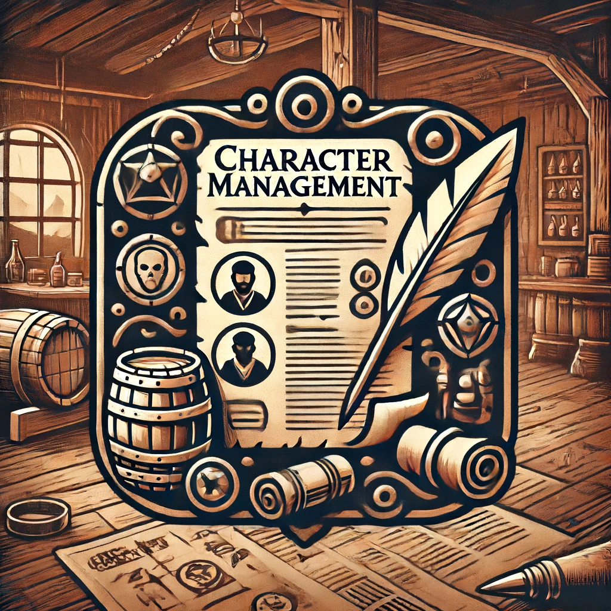

Charakterverwaltung
Verwalten Sie Ihre Charakterblätter und Spielverläufe an einem Ort
Unsere Charakterverwaltung bietet Ihnen eine zentrale Plattform, um Ihre Charaktere für verschiedene Spielsysteme zu erstellen, zu verwalten und zu speichern. Egal, in welcher Sprache oder für welches System, wir haben die passenden Vorlagen und Funktionen für Sie.
- Charakterbogen-Erstellung: Erstellen Sie Charakterbögen für jedes Spielsystem mit unseren benutzerfreundlichen Vorlagen.
- Vorlagen für verschiedene Systeme: Nutzen Sie vorgefertigte Vorlagen, die Sie an Ihre Bedürfnisse anpassen können.
- Mehrsprachige Unterstützung: Erstellen und verwalten Sie Charakterbögen in verschiedenen Sprachen.
- Importfunktion: Importieren Sie Charakterbögen aus anderen Systemen und skalieren Sie diese automatisch an das neue System an.
- Speicherung und Zugriff: Speichern Sie Ihre Charaktere sicher und greifen Sie jederzeit darauf zu, egal wo Sie sind.
- Spielverlauf-Tracking: Verfolgen Sie die Fortschritte und Entwicklungen Ihrer Charaktere über verschiedene Sitzungen hinweg.
"Die Charakterverwaltung von Tavern hat unser Spielerlebnis erheblich verbessert. Alle Charaktere und deren Fortschritte sind jetzt leicht zugänglich und bestens organisiert."